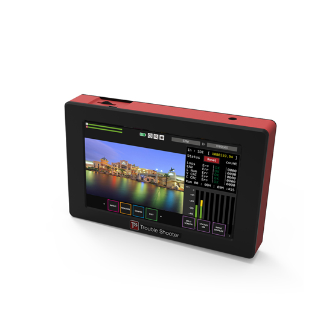

どこを調べる？
送出機器、配線、受け側のどの区間を試験するか決める。
撮る・録る・確かめる ↗EQUIPMENT / 60
映像信号の試験・簡易解析
試験映像を送り、戻ってきた信号を確かめる。
KEY SPECIFICATIONS

画像を大きく見る ＋01 / ROLE & FLOW
実際の配線・端子構成は案件に合わせて決めます。
02 / BEFORE YOUR BRIEF
送出機器、配線、受け側のどの区間を試験するか決める。
SDI/HDMI、解像度・フレームレート、3G-SDIのLevel、HDCPを確認。
本番信号を止めてよい時間、試験用の接続、電源、判断担当を共有。
03 / CHOOSING THE RIGHT TOOL
本番前の接続確認や、映像が出ない区間の切り分けに。試験パターンを出す機能と、入力信号を見る機能を1台で使えます。
4K信号の試験機やゲンロック基準発生器ではありません。SDIケーブル長表示は入力信号品質からの推定で、実測長や配線の合格保証には使いません。HDCP付きHDMI信号の出力・SDI変換には対応しません。
波形・ベクトルスコープ・最大8chの音声レベルなどを確認できます。SDIアイパターンはHD/3G-SDI入力時に対応。1080p50はLevel A/B入力に対応しますが出力はLevel Aのみです。変換できる組合せは公式フォーマット表で確認し、任意の形式へ自由に変換できると考えません。ループチェックは試験パターンを対象機器へ送り、戻り信号を同時に調べる機能で、入力信号のループスルーと同じ意味ではありません。代理店標準付属品はDC12V/1.5AのACアダプター。バッテリープレート、バッテリー、ラック取付部材、試験ケーブルの手配範囲は別途確認します。
試験する機器と区間、SDI/HDMI形式、HDCP、試験パターン、切り離し可能な時間、配線・電源・担当者をお聞かせください。本体・周辺機材・搬入出・設営・本番操作・撤去を分けて、必要な範囲を整理します。
04 / RELATED EQUIPMENT
SmartScopeは映像や波形の監視、GEN10は同期基準の配布が中心です。